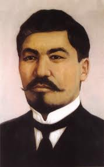

About Alikhan Bukeikhanov
Alikhan Nurmukhameduly Bukeikhanov (5 March 1866 - 27 September 1937) was a Kazakh politician, statesman, journalist and publisher who led the Alash party and the provisional government of Alash Orda from 1917 to 1920.
Key Moments in His Life
- Education and Early Activism
- In 1917, he co-founded and led the Alash party.
- He was repeatedly arrested and exiled by tsarist authorities.
- Bukeikhanov was arrested and banished to Moscow.
- He was sentenced to death.
Major Inventions and Contributions
- founder of the Alash party
- co-founded the influential newspaper "Qazaq,"
- "Ovtsevodstvo v stepnom krae" (Sheep-Breeding in the Steppe Land).